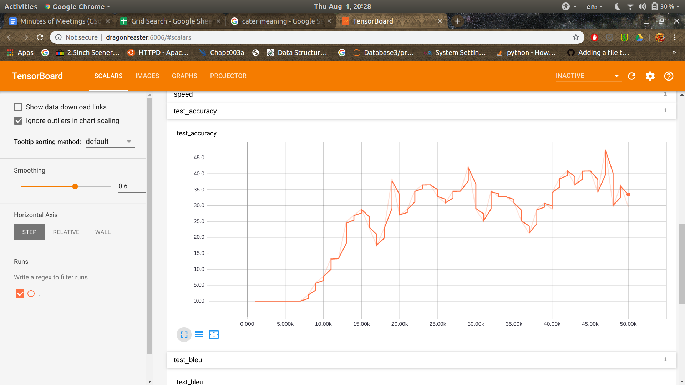
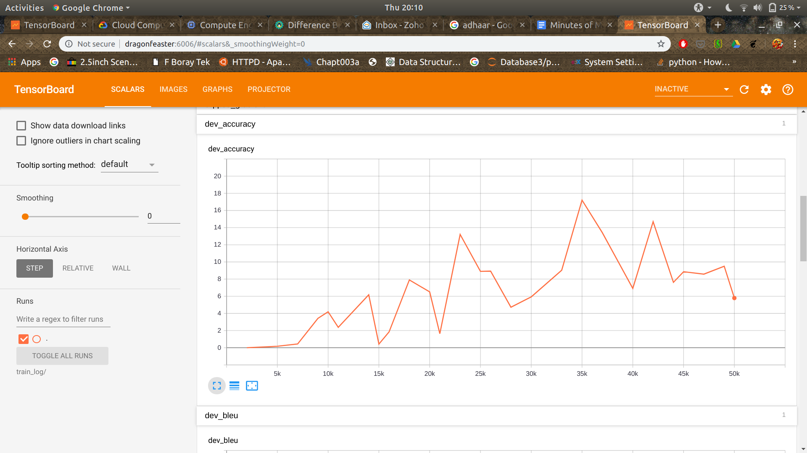

Minutes of Meetings
14th May 2019 ( 10:30AM IST )
Attendees
- Aman Mehta
- Aashay Singhal
- Anand Panchbhai
Title: Introductory Meet
- Introduction
- How will the collaboration work go on?
- Current progress
- Brief discussion on the idea and laying down of the basic problem to focus on.
- Points to remember throughout the GSoC period
- Work for the next week
- Next meeting
Introduction
- Each one of us introduced themselves:
- Anand Panchbhai: (I am writing mine here)
I am Anand Panchbhai, a 3rd year UG student pursuing my Bachelor of Technology in Computer Science and Engineering from IIT Bhilai (Indian institute of Technology), Raipur, Chhattisgarh, India.
How will the collaboration work go on?
- A separate branch will be created on which Anand will continue to work (Dedicated for GSoC 2019).
- Take necessary permission from Tommaso Soru so that you can create your own branch in the given repository.
- For all issues a separate branch will be created like issue_23 for the issue #23. It will be merged to the stable(the gsoc 2019 branch) when deemed stable. In line with : https://git-scm.com/book/en/v2/Git-Branching-Branching-Workflows.
- Every one agreed on the topic based branch creation approach for the development work.
- As Anand isn’t the collaborator for now, he will be working on his forked repository.
Current Progress
- Fix PIPELINE
- Regarding improving the document and tackling inconsistencies.
- We discussed that Anand will go forward with the fixes.
- Tensorflow version
- We discussed this in detail and decided to mention in the document regarding the tensorflow version for now.
- Will take more concrete action when everybody was present in the meeting.
- Fix tensorflow warnings
- Updating some old parts of the code.
- Adding progress bar for loops in generator.py
- Some cosmetic changes
Brief discussion on the idea and laying down the basic problem to focus on.
- Anand explained the timeline and put forward his ideas.
- Aman wanted to know how he was going to tackle the issue of compositionality. The problem as stated by him was: Compositionality problem
- A composition B are there in the training dataset, C also exists in the dataset but is not related in any way with B. The final model should be able to generate B composition C when the need arises.
- The main point put forward by Anand as per his proposal were:
- Similar to the way a dataset was being generated for compositionality, he suggested a more basic approach for dataset generation major point being:
- Question generated based on comparable and non-comparable type of entities.
- Recursive question generation using properties of parent classes.
- Tackling the variable issue.
- You can find more details about these points in his proposal.
Points to remember throughout GSoC (Aman and Aashay)
- Commit changes frequently to the repository and don’t just keep them locally. (So that mentors can check them out when free)
- Don’t forget to write the blog.
- Focus on the main goal of the project and do not deviate too much, as this project is time constrained things need to be prioritized.
- A bare bones model on compositionality should be ready before first evaluation.
Work for next week
- Get permissions from Tommaso Soru.
- Fix the issues as per the discussion in separate branches.
- Branches will be merged as per the review done.
Next meeting
- As Aashay and Aman are attending The Web Conference (Which they explained in detail) the time and date for the next weeks call were not finalized.
- But a consensus was reached that the calls will happen every week at 9:30PM of Mondays (IST) after next week. i.e. starting from 27th May 2019
27th May 2019 ( 10:00PM IST )
Attendees
- Aman Mehta
- Aashay Singhal
- Anand Panchbhai
Title: End of Community Bonding Period
- Agenda :
- Current progress
- Literature Survey
- Work for the next week
- Next meeting
Current progress:
- Understanding the code base.
- Literature Survey.
- We will be using GERBIL for all evaluation purposes, I intend to create the script for converting the datasets we have to the format accepted by GERBIL and then let it calculate the scores.(By file upload mechanism)
- Checkout the 3rd Weeks post for more details: https://anandpanchbhai.com/A-Neural-QA-Model-for-DBpedia/WeekThree.html
- There are a few grey areas in the work which will be sorted in the next meeting. (As said by Anand)
Literature Survey:
- The literature survey played a very important role in helping Anand understand the current state of research in this field.
- Data generation has been done before, leveraging the work that has already been done will be beneficial. The questions are good in terms of templates and can be used effectively.
- Going through the previous implementations, Anand also came across a point: that training final model over DBpedia is a going to be a computationally expensive task. Any addition of entities will cause the model to be modified accordingly.
- GERBIL will be used for all evaluations.
- Anand wanted to continue to explore the areas a bit more in the coming week and come up with some ideas without changing the current timeline.
- A more concrete and refined path will be presented by Anand in the next meeting.
Work for the next week
- Some issues regarding the version of Tensorflow to be used still need to be resolved and needs input from Tommaso Soru: https://github.com/dbpedia/neural-qa/issues/11
- Anand will continue to explore the area for one more week and come with with more concrete plan for implementation of various aspects of this project.
- Apart from that all necessary script for model evaluation need to be completed before the next meeting. (As per Anand’s proposed timeline)
Next meeting
- Next meeting will be held on the 3rd of June 2019 at 10:00PM IST
3rd June 2019 ( 10:00 PM IST )
Attendees
- Tommaso Soru
- Anand Panchbhai
Title: Stage 1
- Agenda :
- Current progress
- Questions raised in previous meeting
- Should I start making pull requests?
- Facing difficulty in using the GERBIL portal. (Annotator not loading issue)
- Proposal to create my own F1 score function for the time being.
- Should I include n-fold validation to my scheme of model evaluation. (The current scores are for a given set, n-folds will allow me to take an average of the model performances)
- Method 2: A name tag based method for Q&A
- Work for the next week
- Next meeting
Current Progress
- Devised a new approach towards complex Q&A problems.
- Setup initial code required for GERBIL (Scripts)
- Initial result on the LC_QuAD dataset: BLEU score of 88% (F-Score need to be calculated, these scores are pretty initial).
Questions raised in previous meeting
- Training final model over DBpedia is going to be a computationally expensive task. Any addition of entities will cause the model to be modified accordingly. (Possible answer is the name-tag based method).
- The essence of NsPM is to create a single model to take care of all the aspects of conversion of natural language to SPARQL.
- Traditional approaches employ different modules for different aspects of Natural Language to SPARQL like entity detection, Syntax check etc.. Each module contributes to the final error in SPARQL query prediction model.
- This single model helps in preventing error that propagates through different modules as used by many other traditional mechanisms.
- What to do with the nmt sub-module which uses an older version of tensorflow? As of now i have cloned the updated nmt library separately.
- Update the submodule present in repository.
- Try to ensure all parts of the code continue to work.
Should I start making pull requests?
- Anand may start making pull requests, the pull requests should be done after a bunch of commits (4-5 commits).
Facing difficulty in using the GERBIL portal. (Annotator not loading issue)
- Anand will create an issue in the GERBIL regarding the problems faced by him and share it with Tommaso who will escalate it to the maintainer of GERBIL for faster resolution.
Proposal to create my own F1 score function for the time being.
- Anand should create a function to implement the F1 score, F1 score is a well defined evaluation measure and should follow the same.
Should I include n-fold validation to my scheme of model evaluation. (The current scores are for a given set, n-folds will allow me to take an average of the model performances)
- Sure, for self evaluation of the developed algorithm.
- Ensure that QALD benchmark is used according to proper instruction: train dataset for training and test dataset for testing.
- It seems like a viable idea, but it faces the same issue as other alternatives did i.e. different modules add up to the final error.
Work for the next week
- Test the existing model on compositionality for complex QA.
- Accessing the performance of the model in the previous point.
- Evaluate and adjust the model to gain maximum performance.
- The second stage will try to extract maximum performance with the current model for both simple and complex queries.
- Continue experimentation on other types of models like method 2.
- Focus on the current principle of neural-qa for now, do not deviate.
Next Meeting
10th June 2019
10th June 2019 ( 10:00 PM IST )
Attendees
- Aman Mehta
- Aashay Singhal
- Tommaso Soru
- Anand Panchbhai
Title: Stage 2
- Current progress
- Discussion for the next stage
- Work for the next week
- Next Meeting
Current Progress
- GERBIL
- I went through the issues in the GERBIL repository which solved a lot of issues I faced.
- Using both the dataset uploaded as JSON format will not work out as it hasn’t been implemented in the repository. (https://github.com/dice-group/gerbil/issues/250)
- The online portal doesn’t allow me to upload files of size greater than ~50Kb. (Thus cannot run: https://github.com/dice-group/gerbil/issues/183)
- With that information in hand, the only feasible way might be to clone the repository on my PC and run a QA server according to https://github.com/dice-group/gerbil/wiki/Question-Answering for my QA models on a local server.
- Here is a screenshot of GERBIL running on my PC(local):
- I am still finding some issues in running the portal, I will have to put in some more effort to get it up and working, the issues are
- On starting an experiment the process goes on and on forever, on searching the issue i did find a relevant issue on this topic. It suggested me to wait for sometime as it takes longer in the first run after which the program caches all the information from the first run.
- On running for around 5 hours also the process didn’t stop and I terminated the program.
- Complete the GERBIL installation and finalize the Qa-Server
- This weeks work
- To prevent any delay in the current timeline, I halted further work on GERBIL and started testing the compositionality of the model.
- Test the existing model on compositionality for complex QA.
- Question: why?:
- Choose any 10% templates and their output and shift it to new file (test data), the rest of the contents of this file should be split into 90% train and 10% dev using the split_in_train_dev_test.py script.
- Nothing SPecial with the numbers
- The tests were first run on the example file given in the data subfolder GS_v3.csv. The test was run multiple times. The BLEU score varied from 65-78. The log files will be uploaded for reference.
- Plot the graphs and study the way the model is converging : Tensor Boards
- Regarding the computing machine: Tommaso suggested that we will look into using bigger server(With more computation power) at a later part of this project as it is not required right now.
- Django server to host the qa model:
- The flow in general needed a lot of amendments to work the changes have been commented and will be pushed after few checks.
- F1 Score functions are divided into multiple categories, all are based on entities and triplets, implemented as per GERBIL as per: https://github.com/dice-group/gerbil/wiki/Question-Answering (example: http://gerbil-qa.aksw.org/gerbil/experiment?id=201906100015): (Which one should be used)
- C2KB
- P2KB
- RE2KB
- AT
- AIT2KB
- Sue use the same scores as used in GERBIL
- Evaluate and adjust the model to gain maximum performance.
- This could not be carried out: the plan was to thoroughly to get max performance out of the NMT model.
- Anand may start making pull requests, the pull requests should be done after a bunch of commits (4-5 commits).
- Pull request will be made this week.
- Okay
- Update the submodule present in repository.
- The submodule was updated to: 0be8642, the complete flow worked without a flaw the updated submodule will be pushed this week.
- Okay
- Why the pushes haven’t already been done:
- I work on a clone of this repository and then one by one make changes in the gsoc-anand repository, this ensures that I can keep a track on the changes I am making to the git repository in each commit.
- The work for this stage was not completed- specifically: Evaluate and adjust the model to gain maximum performance.
- Discussion for the next stage
- Generating domain independent templates to minimize burden on the end user.
- Comparable and Non-comparable (Reference: Proposal)
- The basic structure of the work-flow will be same as current.
- Implement a basic model and explain the model in more detail in the next meeting.
- Work for the next week
- Fixing the issues with GERBIL
- FInalising the REST Server
- Push all the changes to the repository properly
- Update the blogs
- Generating domain independent templates to minimize burden on the
end user for both complex and simple QA.
- Next Meeting
- 17th June 2019 10:00PM IST
17th June 2019 ( 10:00 PM IST )
Attendees
- Aman Mehta
- Aashay Singhal
- Tommaso Soru
- Anand Panchbhai
Title: Stage 3
- Current progress
- Discussion for the next stage
- Work for the next week
- Next Meeting
Current Progress
- Code pushed for : Complete automation of previous Pipeline: https://github.com/dbpedia/neural-qa/tree/working-gsoc-anand/gsoc/anand/pipeline_1, it’s pretty cool!
- The generate_templates() as stated in the proposal was completed:
- Which includes(Discussion on code!?):
- Full automation of pipeline_3
- Automatic retrieval of URLs and properties built
- Whole structure of proposed pipeline was completed
- Recursive question SPARQL generation completed
- Query Check done
- Answer query done
- Multiple type of question based on entity range done: more will be added
- Testing on nmt Model done with BLEU > 95 (log present in working-gsoc-anand branch)
- Questions involved: who, what, when, where, count, oldest, longest etc.
- Compositionality questions were made, like:
- NLQ: What is the associated band of birth place of azzedine amanallah ?
- SPARQL: select ?x where{<http://dbpedia.org/resource/Azzedine_Amanallah> dbo:birthPlace ?x1 . ?x1 dbo:associatedBand ?x }
- NLQ: What is the number of area code of birth place of olga kurylenko ?
- SPARQL: select ?x where{<http://dbpedia.org/resource/Olga_Kurylenko> dbo:birthPlace ?x1 . ?x1 dbo:areaCode ?x }
- Small changes were done compared to the originally proposed code based on situation.
- Code and readme: https://github.com/dbpedia/neural-qa/tree/working-gsoc-anand/gsoc/anand/pipeline_3
- To de done
- Comparative questions were not built that involve comparison between different properties of the same or different entity as i am still formulating a general approach.
- More questions need to be added and i will be formulating the means to do the same.
- Test runs: Test runs were carried out on small numbers of templates: 37:
- The csv of the questions were generated using the newly made pipeline 3.
- The BLUE score on the test split reached ~95, the number of runs were limited and I look forward to testing more in the next week.
- The above image shows how the BUE score changed with the number of iterations.
- One observation I had was that the question structure formed by the mode were right but the selected entity URIs were wrong till 8000K iteration (somewhere in the middle).
- As the correct URI started getting predicted the scores increased at a faster rate.
- The Model configuration: --num_train_steps= 20000 --steps_per_stats=100 --num_layers=2 --num_units=128 --dropout=0.2 --metrics=bleu.
More analysis was suggested by Tommaso Soru, other suggestion from the mentors included:
- Use of external embedding
- Knowledge graph tokens
- BLEU analysis
- Google APIs
- More natural
- Grammar correction
- Manual trimming
- More steps towards ensuring model performance and convergence will be taken as the project progresses.
- I could not work on GERBIL this week, but the small work i did was not much fruitful. I will request Tommaso to please get me in touch with the contributor for resolving the issues.
- Question:https://github.com/dice-group/gerbil/issues/322#issuecomment-496145315
- Answer:https://github.com/dice-group/gerbil/issues/322#issuecomment-496158636
- F score functions needs to be finalised, will be done early this week. Highest Priority.
- As discussed last week:
- Pull request is made: (Questions) https://github.com/dbpedia/neural-qa/pull/14#issue-288853232 Could not find Aashay there!(Wanted to add as an reviewer) (Done)
- Update the submodule present in repository (Done)
- Fixing the issues with GERBIL (Need external intervention)
- F1 Score (Not Done, Not-Completed)
- FInalising the REST Server (Done, server is working)
- Push all the changes to the repository properly (Done)
- Update the blogs (Done) : https://anandpanchbhai.com/A-Neural-QA-Model-for-DBpedia/WeekFive.html
- Observed model convergence, initial behaviour was noted. (Done)
- Generating domain independent templates to minimize burden on the
end user for both complex and simple QA.(Initial parts done)
Discussion for the next stage
- State your plans, (Formulating comparison and multiple entity questions).
- Questions motivated by: https://github.com/dbpedia/neural-qa/blob/working-gsoc-anand/data/annotations_monument.csv
- Any points?
- Evaluation after next meeting
Work for the next week
- More compositionality based on the mentor’s suggestions.
- Finish (Comparison and Multiple Entity )
- F-Score
- GERBIL
Next Meeting
24th June 2019 10:00PM IST
24th June 2019 ( 10:00 PM IST )
Attendees
- Aman Mehta
- Anand Panchbhai
Title: Stage 3
- Current progress
- Discussion for the next stage
- Work for the next week
- Next Meeting
- Complete Blog
Current Progress
- GERBIL (DONE)
- More compositionality based on the mentor’s suggestions.(DONE)
- Found a way to make it more natural (Ranking)
- Complete Blog (DONE) : https://anandpanchbhai.com/A-Neural-QA-Model-for-DBpedia/WeekSix.html
- Train one model for a large number of iterations till the performance plateaus.
Discussion for the next stage
- Time before this evaluation was a period we focused on one main entity and questioned on its properties and the properties of its properties.
- The whole framework is working like a charm. Need to do a bit of finishing to make it more beautiful and functional.
- Discussion on what has been done.
- The next few days are buffer, I propose to finalize on the current model (one main entity followed by questioning on one or multiple properties):
- Fix Bugs if any
- Automate
- Train the model on all major classes based on image in Aman’s proposal.
- Ponder on usefulness of pre-trained embedding to reduce training time. Experimenting will make it clear what other cool things will happen on using pre-trained embeddings:
- A road-block is : I am not able to download the DBpedia embeddings.
- For cases where vocabulary of pre-trained embeddings is not enough, the words will be added to embedding space by random initialization.
- Discuss
Pre-Evaluation Report
- I have tried to be on time with the timeline I proposed, the major goals as part of my proposal were:
- Community bonding period
- [Stage 1] The first stage will mainly focus on fixing all issues in the code to create a proper playing ground for future research endeavour that the project intends to take.
- GERBIL (DONE)
- BLEU (DONE)
- Accuracy (DONE)
- [Stage 2] This stage will shed a light on where we stand and forge a concrete path this project will take. (DONE)
- [Stage 3] Generating domain independent templates to minimize burden on the end user for both complex and simple QA. (Pending review on newly proposed parts)
- A lion’s part of the proposed methodology was implemented successfully.
- A ranking mechanism to determine the relevancy of the questions.
A special test was suggested by Aman to test how well the model really performed in the task on handling compositionality based queries.
Aman was very interested and linked the method of ranking proposed in the previous section.
- As a bonus a portal to experiment on was realized! (DONE)
- An end to end model for Class Eukaryotes was implemented. With BLEU ~97 and accuracy ~90. F1 Score for a very small part of it was implemented (score 1.0) (DONE)
Next Meeting
1st July 2019 10:00PM IST
2nd July 2019 ( 10:00 PM IST )
Attendees
- Anand Panchbhai
- Aman Mehta
- Aashay Singhal
- Tommaso Soru
Title: Buffer
- Current progress
- Discussion for the next stage
- Work for the next week
- Next Meeting
Current Progress
- Carried out a test as suggested by Aman on compositionality: Which basically meant, I created a custom test such that for question containing A composition B and A composition C, B composition C was only included in the test set.
- BLEU reached ~ 50 with a 0 accuracy. (~45,000 iterations). Using pre-trained embeddings and vocabulary from all the sets.
- The training configuration were as such: --num_train_steps= 1200000 --steps_per_stats=100 --num_layers=2 --num_units=128 --dropout=0.2 --metrics=bleu. Embedding were used from a model trained previously on the whole dataset.
- One thing to notice was that the SPARQL structure was coming out to be right but the number on <UNK> unknown was far more: based on visual analysis. (empirical). One reason might be the embedding were not properly adapted to the scenario.
Discussion for the next stage
- I was travelling last week and could not do much of research.
- The problem of unknown entity can be handled by ensuring on a much granular level that the model knows the meaning of a given entity. I.e. the model should be made aware of the existence of given entity in training and then only a question should be asked on it in test. (every time list of compatible entities need to be properly used to create this custom set) (Proposed task: Check this hypothesis, in a more quantifiable manner).
- Eg: let’s say the test set has an entity Barack_Obama that can replace a placeholder in the question in the test set. But let’s also say that Barack_Obama was never encountered in the train or Dev set. The model is unaware on the word Barack_Obama and its use and hence performs badly on the test set.
- Would like to hear your thoughts on the previous meeting and this one.
The suggestion from the mentors were as follows:
- External embeddings
- Checkout the short paper for Neural Machine Translation for Query Construction and Composition.
- Specifically: Added direct entity translations to tackle the wrong entity detection problem.
- The amendments suggested here should be tried.
Work for the next week
- Report on experiments done.
- Add TLDR(To Long Didn’t Read) section to the blogs.
- Improve and adapt whenever required.
- Complete Blogs
Next Meeting
8th July 2019 10:00PM IST
8th July 2019 ( 10:00 PM IST )
Attendees
- Anand Panchbhai
- Tommaso Soru
Title: Stage 4
- Current progress
- Discussion for the next stage
- Work for the next week
- Next Meeting
Current Progress
- Mainly training models trying to increase performance (In progress)
- Report on experiments done. (Done)
- Add TLDR(To Long Didn’t Read) section to the blogs. (Not Done)
- Improve and adapt whenever required.(In progress)
- Complete Blogs (Not Done)
Discussion for the next stage
- Tommaso suggested: Using alignment label-to-entity alignments in the training set. He claimed that the <unk> problem will be solved by that.
- Adding more relevant examples could also improve the score of the model.
- Discussion on hybrid NMT was done, in which Tommaso suggested that the idea was not very useful for our use case.
- Tommaso wanted to see examples of english language templates and SPARQL, same was shared by Anand.
Work for the next week
- Report on experiments done.
- Add TLDR(To Long Didn’t Read) section to the blogs.
- Improve and adapt whenever required.
- Complete Blogs
Next Meeting
15th July 2019 10:00PM IST
15th July 2019 ( 10:00 PM IST )
Attendees
- Anand Panchbhai
- Aman Mehta
- Aashay Singhal
- Tommaso Soru
Title: Stage 4
- Current progress
- Discussion for the next stage
- Work for the next week
- Next Meeting
Current Progress
- Mainly training models trying to increase performance (In progress)
- Report on experiments done. (Done)
- Add TLDR(To Long Didn’t Read) section to the blog. (Done)
- Improve and adapt whenever required.(Done)
- Complete Blogs (Not Done | after meeting)
Discussion for the next stage
- Vocabulary matched for train and test set
- Frequency threshold included
- Added more compositions in the training set
- ~70 BLEU, Cases with train example frequency ~17 were properly translated to corresponding SPARQL form.
- Cases with lesser frequency faced issues, thus the less BLEU. On using only the entities with a very high frequency the performance was higher.
- The final filters checked for entities in the test set questions, making sure that the entities tested were well learnt in the training phase:
- Ontology entity
- Resource entity
- And frequency of resource entity
- Example of a successful translation:
- Test: select count(*) as ?x where{<http://dbpedia.org/resource/Crotalus_mitchellii_angelensis> dbo:species ?x1 . ?x1 dbo:conservationStatus ?x }
- Train contained these and a few more
- select var_x where brack_open dbr_Crotalus_mitchellii_angelensis dbo_conservationStatusSystem var_x brack_close
- select count attr_open wildcard attr_close as var_x where brack_open dbr_Crotalus_mitchellii_angelensis dbo_conservationStatusSystem var_x brack_close
- select var_x where brack_open dbr_Crotalus_mitchellii_angelensis dbo_family var_x brack_close
- select var_x where brack_open dbr_Crotalus_mitchellii_angelensis dbo_family var_x1 sep_dot var_x1 dbo_thumbnail var_x brack_close
- select var_x where brack_open dbr_Crotalus_mitchellii_angelensis dbo_family var_x1 sep_dot var_x1 dbo_wikiPageExternalLink var_x brack_close
- select var_x where brack_open dbr_Crotalus_mitchellii_angelensis dbo_family var_x1 sep_dot var_x1 dbo_wikiPageRedirects var_x brack_close
- select count attr_open wildcard attr_close as var_x where brack_open dbr_Crotalus_mitchellii_angelensis dbo_family var_x1 sep_dot var_x1 dbo_wikiPageRedirects var_x brack_close
- Incase a low frequency entity was tested, the model gave <unk> as a result sometimes. I could see that frequency did matter for the translations. The alignment strategy suggested by Tommaso might just help, but increasing the frequency of entity in the train set seems like a good solution as per this experiment.
- I have finished creating PoC for rest of the preprocessing suggested by me in my proposal. (Thesaurus Search)
Work for the next week
- Though I was able to reach good test result, the pipeline needs to be finalized and automated. I intend to do so this week.
- Tommaso said that he wanted a table with all the experiments conducted by me and their results to be submitted in this stage. I have kept an archive of all my tests and will create a report pdf next week. Tracking all the changes.
- Minimum number of iterations per experiment is 30,000
- After This stage, I intend to test on LCQuAD and QALD (during the buffer period)
- For testing on LCQuAD and QALD (benchmark dataset) the following can be done:
- Train on your own sets and test on the benchmark datasets.
- Use the training set of the benchmark datasets and to build final model to be tested on the test set of the benchmark dataset.
- Appending your dataset with the train set of the benchmark dataset to test on the test set of the benchmark dataset
- Refactoring the code
- Please wait for the next meeting before evaluating my performance.
Next Meeting
22nd July 2019 10:00PM IST
22nd July 2019 ( 10:00 PM IST )
Attendees
- Anand Panchbhai
- Aman Mehta
- Tommaso Soru
Title: Stage 5
- Current progress
- Discussion for the next stage
- Pre-Evaluation Report
- Next Meeting
Current progress
- Though I was able to reach good test result, the pipeline needs to be finalized and automated. I intend to do so this week. (Done)
- Report will all useful experiments (Done) [ https://anandpanchbhai.com/A-Neural-QA-Model-for-DBpedia/static/report.pdf ]
- Refactoring the code (Done)
- Blog [Done]
Discussion
- Even though i was able to reach an 85 BLEU score, the F1 score was very low. Cause sometime entities were mismatched. Like: Abstract and Manufacture!
- External embeddings
- Fast text
- The attention model feature of the NMT seem to be very useful for the compositionality special test done. One of the possible reasons can be that the test set only contained long compositionality based examples.
- I read the paper suggested by Tommaso on Slack: https://arxiv.org/abs/1906.09302, The paper was a very nice survey on all the models and datasets. And the results stated there encouraged me to test the attention models and the results were dramatically improved.
- The previous pull request hasn’t been accepted, should i make another pull request for this stage.
Update
- Till now the model structure hasn’t been tweaked much, the next stages were meant to improve model performance: Evaluating the performance of the model by tweaking the attributes for the NMT model to give maximum performance using the training dataset generated in the previous stages.
- The buffer period will be used to form more questions using the generalized template generation methodology built in the previous stages and testing on standard benchmarking datasets.
- Possibility of a research paper | Milestones to be reached | > 30 days are left.
- The communication will increase dramatically during the next month.
- Convs2s
Pre-Evaluation Report
- [Stage 4]: Generating domain independent templates to minimize burden on the end user for both complex and simple QA. (Done) [With one subject entity]
- The performance on general train/dev and test sets was good. But the performance on special test set mentioned earlier was worked on in this stage from mere 39 BLEU/ 0 Accuracy to 85 BLEU / 35.6 Accuracy (Done)
- [Stage 5]: Current complex QA model doesn’t understand when to add a new variable in the query, need to devise a method to make it more aware. Discuss and fInd a way to handle these points in the model. (Not Done) [Later, if time permits] [Question with more than one main entity was not worked on in this phase]
Next Meeting
29th July 2019 | 10:00PM IST
29th July 2019 ( 10:00 PM IST )
Attendees
- Anand Panchbhai
- Aman Mehta
- Aashay Singhal
Title: Stage 6
- Current progress
- Discussion for the next stage
- Next Meeting
Current Status
- Fast-text is implemented on pytorch and NMT on tensorflow, the difference in the underlying architecture makes the integration more challenging. Major benefits of fasttext include:
- Sub-Word Information
- Position dependent weighting [for context vector]
- Phrase Representations [Roughly merging]
- Treats embeddings more like graph entities
- Using external embeddings :
- English: glove
- For OOV words, 2 methods were suggested:
- Random initializations
- fast-text
- SPARQL:
- https://zenodo.org/record/1320038#.XT8CeHUzbEG could not download this one.
- Tommaso suggested to use SPARQL entities as KGE. Use fast-text / Word2Vec to train the embeddings.
- We can use fast text based embedding for better results owing to it’s graph like nature.
- The main concentration will be on the ability of NMT to properly translate natural language queries to SPARQL queries. As per the timeline this time is to train the model for higher performance by tweaking with hyper parameters.
- Even a 90% accuracy lead to wrong result as shown here:
- https://anandpanchbhai.com/A-Neural-QA-Model-for-DBpedia/error_dev
- But many questions are properly parsed in the above report. The issue is mainly with resource entities, probably with low frequency.
- BLEU score are very bad indicator for the performance.
- Fairseq model was explored by me for comparative study, the performance will be presented in the reports later meetings.
- For the Test set in the last meeting which acquired a BLEU of 85 and accuracy of 35%, there were majorly issues with ontology entities as shown here:
- https://anandpanchbhai.com/A-Neural-QA-Model-for-DBpedia/error_test
- The wrong entity detection issues prevailed even though the training frequency was good.
- Test frequency: https://anandpanchbhai.com/A-Neural-QA-Model-for-DBpedia/static/dbo_dump.json
- Train Frequency: https://anandpanchbhai.com/A-Neural-QA-Model-for-DBpedia/static/dbo_dump_train.json
- Only a few questions suffered wrong query structure issues.
Discussion for the next stage
- Making the scope of the project more specific.
- Compositionality on NMT only
- Test on embeddings
- Train on all of DBpedia to test on LCQuAD and QALD | DBpedia Day
- Better results with adjusting hyperparameters and other aspects on the model
- Questions:
- Memory
- Instead of sentence structures
Next Meeting
1st August 2019 | 10:00PM IST (Text based)
1st & 5th August 2019 ( 10:00 PM IST )
Attendees
- Anand Panchbhai
- Tommaso Soru
- Aashay Singhal
Title: Stage 6
- Current progress
- Discussion for the next stage
- Next Meeting
Current Progress
- [Current Results]Making the dropout value to 0.5 from 0.2 boosted the consistency on the model as well as set a new record for the model performance on test set to 86 BLEU and 40.9% Accuracy with an F1 score using GERBIL = 0.5172 (Macro F1 QALD).
- What do I mean by consistent performance ?:
- 
- In other cases the consistency was not there, i.e. in the last week’s result wich was stated (dropout 0.2) to be ~85 BLEU and ~35% accuracy. On further training the model performance worsened. But with dropout 0.5 the performance was more consistent.
- So compositionality is very much possible with NMT, The only major issue faced by the model was with dbo_species and dbo_family. The model keeps confusing between the 2. Use of other embeddings might help cater to the issue. Otherwise the model performed well in structural aspects. As can be seen from both BLEU score and accuracy.
- For a comparative understanding I would like to share the F1 score on the same test set for the algorithm where train,dev and test were split in a random fashion instead of a special test set. The score was: 0.7839 (Macro F1 QALD).
- [Stage 6]: As per the schedule of the proposed timeline this stage is for hyperparameter optimization. And I had proposed the use the Grid Search to accomplish the same.
- [No Fasttext Integration]: Fasttext integration into NMT is out of scope for the proposed project and with the given timeline does not seem feasible. It can be considered as future scope of this project. Nevertheless I will build a wrapper to use other algorithms like ConvS2S to enable a comparative analysis. Ok
- [Grid Search and Request for more Computation Power]: Current hyper parameter tuning methodology is based on empirical decision and random search. More computation power cannot be provided by DBpedia. Possible suggestions:
- Colab
- Amazon Deep Learning Containers
- Using different embedding is also a hyper parameter tuning process and will be done as part of the proposed grid search.
- As the number of experiments are increasing and that being the only task left, I request you to please provide me with other possible options to enable such computation on a remote device as performing it on my PC seems infeasible.
- Similarly training on the whole DBpedia is not a feasible activity for me to do on my PC. (This activity is required to be able to run tests on LCQuAD and QALD datasets)
- If providing such compute resources is not possible I might have to revert to compute resources from my college (Without GPU) or using paid cloud services. Which I am willing to do.
- Here is how the grid search will be managed: [Use Micro F1 and run for 50,000 iterations because of unstable accuracy]
- [F1 Score Server]: I will upload the Django webapp to allow the F1 score calculations to become reproducible.
- [DBpedia Embeddings| suggestion]For the case of creating DBpedia entity embeddings, methods that uses RDF triple information can be used where let the triple be:
- <entity1> <entity2> <entity3> and let their vector representation be v1,v2 and v3. The corresponding loss will be similar to v1+v2-v3. A word2Vec model can be trained on this base iea to get some good graph based embedding space. This is a well known way of training KGE. [Try it out]
Discussion for the next stage
- Discuss above points
- What according to you is the stage of the project?
No comments
Next Meeting
8th August 2019 | 10:00PM IST (Text based)
8th August 2019 ( 10:00 PM IST )
Attendees
- Anand Panchbhai
- Tommaso Soru
- Aashay Singhal
Title: Stage 6
- Current progress
- Discussion for the next stage
- Next Meeting
Current Progress
- Grid Search Sheet updated: https://docs.google.com/spreadsheets/d/1tJBuRIDORvjiX4ULJesjvEVIRCXpiIHh5o1B3P5sp0o/edit?usp=sharing
- Might require a bit more time to complete it, will try to finish by next meeting. I am running on 2 machines one with GPU on Google cloud platform and another one on my institute’s Machine.
- I could not find free alternatives:
- How to run NMT model on Colab was an issue I didn’t know how to fix.
- Amazon deep learning containers: could not find free and powerful one.
- Apart from that I was thinking to add more questions to complete creating Stage 5 template.
- Example: Context understanding one
- Who is the wife of Barack Obama and when is her birthday?
- Making big questions with and
- Who is the prime minister and national song of India?
- Boolean Question
- Is India a country?
- Training is irrespective of the code so I will make the final pull request by the end of next week.
Discussion for the next stage
- Any comments?
Next Meeting
12th August 2019 | 10:00PM IST (Call based)
12th August 2019 ( 10:00 PM IST )
Attendees
- Anand Panchbhai
- Aman Mehta
- Tommaso Soru
- Aashay Singhal
Title: Stage 6
- Current progress
- Discussion for the next stage
- Next Meeting
Current progress
- Grid search done without embeddings : https://docs.google.com/spreadsheets/d/1tJBuRIDORvjiX4ULJesjvEVIRCXpiIHh5o1B3P5sp0o/edit?usp=sharing [Done]
- Best model in terms of performance goes to the model with the following configurations:
Serial Number | Dataset Description | Num Train Steps | steps_per_stats | Num_Layers | Num_Units | Dropout | Attention (With Type) | Embeddings (Description) | Done / Not Done | Best BLEU | Best Accuracy | Time Taken |
3 | Special Set: Separate test + Same Vocab + Frequency thresholding. The test and train tests were exclusive of each other. | 50000 | 100 | 2 | 128 | 0.7 | Yes (scaled luong) | No | Done | 85 | 45.06 | ~4 hours 15 minutes (College PC) |
- Added time take: as suggested by Tommaso. [Done]
- Blog updated [Done | more update after meeting]
Discussion for the next stage
- The embeddings for english based on fasttext when used led to lot of OOV as the test set is based on Eukaryotes and thus all the words were outside the vocabulary of general embeddings. Might have to change the dataset.
- For DBpedia embeddings, I downloaded the embeddings from the site suggested by Tommaso a few weeks ago ~10.0GB file (Zip). On extraction the size of the embedding was 23 GB. Which is way larger than the RAM of my CPU. Thus, couldn’t run the model.
- The GCP server I have has only 16GB memory: will have to increase its size. This might become a costly affair.
- Testing on QALD and LC-QUAD will require training on large corpus. Which will again require me to add more questions in the training set apart from the one mentioned by me in the last meeting. Like: list all the children of Nelson Mandela etc.
- The grid search was to be done as per the proposal this week and it’s been done.
- As the next week was buffer according to the proposal, The milestones for next week will mainly focus on these in the following order and priority.
- Adding more questions and finalizing all other aspects of code.
- Creating the final project report with comparison with other models on compositionality namely convs2s.
- Upload train log in the spreadsheet for mentor reference
- Testing on QALD and LC-QuAD
Next Meeting
15th August 2019 | 10:00PM (text based) [Cancelled by Anand]
19th August 2019 ( 10:00 PM IST )
Attendees
- Anand Panchbhai
- Aman Mehta
- Tommaso Soru
Title: Stage 7
- Current progress
- Discussion for the next stage
- Next Meeting
Current progress
- [Eukaryotes] : Using pre-trained embeddings for DBpedia (Biased graph walks: https://zenodo.org/record/1320038#.XT8CeHUzbEG) for SPARQL embeddings and English: pre trained embeddings using the models already trained by me with the following configuration:
- Layer:2
- SIze: 128
- Without attention
- Drop-out: 0.2
- Dataset: 10% test | 10% dev | 80% train
- BLEU: 97.69 and accuracy: 89.75
- The performance reached was:
- BLEU: 93
- Accuracy: 63%
- Best results at 15000 iterations, Interestingly the train set had a hard time to reach good performance. The performance dipped after 45,000 iterations to 85 BLEU and 25% accuracy.[a][b][c][d][e][f][g][h]
- Test BLEU:
- Dev BLEU
- Adding more questions and finalizing all other aspects of code.
- Devised the adding of more questions
- Added more scripts to be able to pre-process the embeddings:
- For the 22GB SPARQL embeddings:
- Divided the files into 22 files of 1GB each and created an index with the following entries:
- Name filename line-number
- Scripts to extract embeddings from pretrained models.
- Other scripts were added before this stage.
- Need to comment on some parts of the code [To be done]
- Upload train log in the spreadsheet for mentor reference
- Uploaded 15 of the notable test’s log files can be accessed using the following link: https://drive.google.com/drive/folders/1NAJhXUhMIlPx6rWMPXPlqRyKOnkB8pMX?usp=sharing
- Creating the final project report with comparison with other models on compositionality namely convs2s. [Working]
- Testing on QALD and LC-QuAD:
- Major time taking task is generating the templates with increased number of questions. As the following steps are done to ensure failsafe template generation:
- Template once generated is tested once before adding to the list.
- Rank calculation requires the code to calculate rank using 100 randon possible placeholders: for person itself it took around 5-6 hours.
- Discussion on skipping the failsafe measure to speed up the template generation. Will lead to a lot of bogus templates.
- Training it is taking very long 5-6 hours for 15K iterations.
- [Person] On the newer dataset:
- The model with embeddings is still to be trained.
- Person dataset is very huge and is still being trained with last recorded performance: (16K iterations)
- BLEU: ~67
- Accuracy: ~4 percent
Discussion for the next stage
- I need more time to train the models and test them.
- The project paper is almost ready.
- I intend to submit the code as per the GSoC requirements before 26th August: On 23rd August. I will added details about all the code I have written to ease you in accepting the pull request I make.
- Based on your opinion on my findings I will continue to work on the project to publish the findings after more results are obtained.
- The use of properly trained embeddings boosted the performance of the translations further.
- What is done and what was expected.
Next Meeting
22nd August 2019 | 10:00PM (text based)
22nd August 2019 ( 10:00 PM IST )
Attendees
- Anand Panchbhai
- Aman Mehta
- Tommaso Soru
- Aashay Singhal
Title: Stage 7
- Current progress
- Discussion for the next stage
- Next Meeting
Current progress
- Two directions were suggested by the mentors in the last meeting:
- One was to continue using the RDF2Vec embedding and record all the results thus ending the GSoC project there
- Second being to explore the area of fasttext for training the embeddings.
- Looking at the time constraints it is not possible to look into something new and finish all the while maintaining quality. The work will be hasty and not upto the mark.
- Each experiment approximately took:
- Institute server: ~ 1 day 20 hours
- GCP: ~4 hours
- [Person Dataset] New tests were done on the person dataset. The following results were found:(attention: attention scaled luong)
- With dropout 0.7 with attention, no embeddings
- Test SIze: 113983 questions
- The results for the test set are as follows (Best) :
- The results on the dev set (derived from train set distribution):
- BLEU: 99.17
- Accuracy: 96.26
- More Analysis: (Test)
- Total wrong translations: 98738
- Translations with number of error entities:
- {
- 0: 15246,
- 1: 49680,
- 2: 14153,
- 3: 6899,
- 7: 320,
- 8: 232,
- 11: 24,
- 12: 20,
- 'Wrong number of tokens': 27418
- With dropout 07 + attention SPARQL embed extracted from RDF2Vec and random initialization for the rest of the entities not found in the RDF2Vec embedding dataset.
- Random initialized entities were = 1504 out of 33154 words in the total vocabulary.
- Test SIze: 113983 questions
- Embeddings for english language were extracted from previously trained model with the following configuration:
- Layer:2
- SIze: 128
- With Attention
- Drop-out: 0.7
- No embeddings
- The results for the test set are as follows (Best) :
- Dev is derived from the train set distribution and the test is a special test set with thresholding.
- It was the first time that the dev accuracy reached the highest ever in my testings:
- BLEU: 99.33
- Accuracy 97.03
- More analysis:(Test)
- Total wrong translations: 79940
- Translations with number of error entities:
- {
- 0: 34044,
- 1: 36629,
- 2: 16682,
- 3: 4291,
- 7: 82,
- 8: 173,
- 11: 18,
- 12: 22,
- 'Wrong number of tokens': 22051
- I ran the experiment for more number of iterations as the graph did not plateau at 50k.
- Run for more iterations. (100k)
- Mentors further suggested that till now the dev set was derived from the train set distribution. Instead we should try to derive the dev set from the test set distribution. As the dev set is usually used as the validation set by the training algorithm, the following are the results of doing so. (No shuffling was done)
- With dropout 0.7 with attention, no embeddings and dev set derived from the test set distribution:
- Test SIze: 56992 questions
- The results for the test set are as follows (Best) :
- BLUE: 75 (~45K)
- Accuracy: 23 (~45K)
- Dev SIze: 56991 questions
- The results for the dev set are as follows (Best) :
- BLEU: 71.44 (~45K)
- Accuracy: 11.94 (~45K)
- More analysis (Test)
- Total wrong translations: 45769
- Translations with number of error entities:
- {
- 'Wrong number of tokens': 3859,
- 1: 26690,
- 0: 11224,
- 2: 11563,
- 3: 2807,
- 11: 40,
- 12: 16,
- 7: 528,
- 8: 273,
- 6: 2
- }
- With dropout 07 + attention SPARQL embed extracted from RDF2Vec and random initialization for the rest of the entities not found in the RDF2Vec embedding dataset.
- Random initialized entities were = 1504 out of 33154 words in the total vocabulary.
- Embeddings for english language were extracted from previously trained model with the following configuration:
- Layer:2
- SIze: 128
- With Attention
- Drop-out: 0.7
- No embeddings
- Test SIze: 56992 questions
- The results for the test set are as follows (Best) :
- BLEU: 77.83
- Accuracy: 31.29
- Dev SIze: 56991 questions
- The results for the dev set are as follows (Best) :
- BLEU: 68.77
- Accuracy: 17.2

- More analysis (Test)
- Total wrong translations: 39160
- Translations with number of error entities:
- {
- 'Wrong number of tokens': 11033,
- 2: 5158,
- 1: 22516,
- 3: 421,
- 11: 7,
- 8: 24,
- 0: 17833,
- 7: 7,
- 12: 2
- }
- Considering that using pre-trained embedding based on previously trained NMT models might not be the best thing to do, so I removed the english embeddings and used only SPARQL embeddings from RDF2Vec
- With dropout 07 + attention SPARQL embed extracted from RDF2Vec and random initialization for the rest of the entities not found in the RDF2Vec embedding dataset.
- Random initialized entities were = 1504 out of 33154 words in the total vocabulary.
- Test SIze: 56992 questions
- The results for the test set are as follows (Best) :
- BLEU: 77.45
- Accuracy: 34.48
- Dev SIze: 56991 questions
- The results for the dev set are as follows (Best) :
- BLEU: 65.31
- Accuracy: 16.73
- More analysis: (test):
- Total wrong translations: 41277
- Translations with number of error entities:
- {
- 1: 23306,
- 2: 3819,
- 'Wrong number of tokens': 13342,
- 3: 745,
- 0: 15716,
- 7: 8,
- 8: 57,
- 11: 6,
- 12: 2
- }
- The experiments yield interesting results.
- I have consolidated all my code into proper positions and commented on them will add an elaborate README.md file to explain the utility. A lot of scripts and tools have been made.
- The webapp for GERBIL will be hosted as a public repository in my account for reference.
- Discussion for the next stage
- Discuss the current result.
- Which link to upload, Aman last time uploaded his branch’s link?
- Pull request will be made tomorrow with all the literature and documentation attached.
- We can discuss the future of the project after GSoC and the pull request related queries in the next meeting:
- Proposal to have the meeting on the 25th for pull request related queries if any.
- No changes have been done to the old codes of the NsPM repository only new code is added.
- All the blogs and Minutes of the meeting will be updated accordingly.
Next Meeting
Not decided 25 or 26th August’19
Meeting Appendix
Model Name | Embeddings | Test | Dev | More Analysis(Test) |
d-i | No | BLEU: 72 Accuracy: 17-11 | BLEU: 99.17 Accuracy: 96.26 | Total wrong translations: 98738 Translations with number of error entities: { 0: 15246, 1: 49680, 2: 14153, 3: 6899, 7: 320, 8: 232, 11: 24, 12: 20, 'Wrong number of tokens': 27418 }
|
d-ii | Yes en-YES SPARQL-YES | BLEU: 80 Accuracy: 45
| BLEU: 99.33 Accuracy 97.03
| Total wrong translations: 79940 Translations with number of error entities: { 0: 34044, 1: 36629, 2: 16682, 3: 4291, 7: 82, 8: 173, 11: 18, 12: 22, 'Wrong number of tokens': 22051 }
|
E-i (Dev from test ) | No | Test SIze: 56992 questions The results for the test set are as follows (Best) : BLUE: 75 (~45K) Accuracy: 23 (~45K)
| Dev SIze: 56991 questions The results for the dev set are as follows (Best) : BLEU: 71.44 (~45K) Accuracy: 11.94 (~45K)
| Total wrong translations: 45769 Translations with number of error entities: { 'Wrong number of tokens': 3859, 1: 26690, 0: 11224, 2: 11563, 3: 2807, 11: 40, 12: 16, 7: 528, 8: 273, 6: 2 }
|
e-ii | en-YES SPARQL-YES
| Test SIze: 56992 questions The results for the test set are as follows (Best) : BLEU: 77.83 Accuracy: 31.29
| Dev SIze: 56991 questions The results for the dev set are as follows (Best) : BLEU: 68.77 Accuracy: 17.2
| Total wrong translations: 39160 Translations with number of error entities: { 'Wrong number of tokens': 11033, 2: 5158, 1: 22516, 3: 421, 11: 7, 8: 24, 0: 17833, 7: 7, 12: 2 } |
e-iii | en-NO SPARQL-YES
| Test SIze: 56992 questions The results for the test set are as follows (Best) : BLEU: 77.45 Accuracy: 34.48
| Dev SIze: 56991 questions The results for the dev set are as follows (Best) : BLEU: 65.31 Accuracy: 16.73
| Total wrong translations: 41277 Translations with number of error entities: { 1: 23306, 2: 3819, 'Wrong number of tokens': 13342, 3: 745, 0: 15716, 7: 8, 8: 57, 11: 6, 12: 2 }
|
Run All experiments here for a total of 200 iterations.
[a]so you're saying the accuracy decreased with more number of iterations? That's very unusual
[b]yes the values were fluctuating a lot near the end but constantly remained above 85 BLEU and accuracy was always >25.
[c]can we have a acc/bleu vs iterations graph?
[d]Training for more iterations might have helped as the graph didn't really plateau. will be doing that.
[e]The values mentioned by me were for that last dipped region in the given image.
[f]Sorry, it dipped after 45K.
[g]Over fitting might be a reason for this behaviour? What do you think?
[h]Acc is my major concern here, can you put a graph for acc vs iterations please?